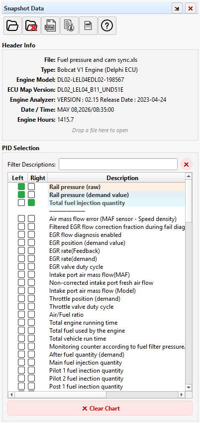
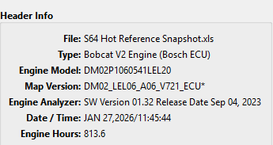
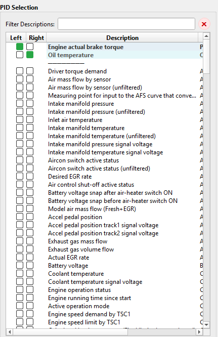

The Snapshot Data panel is the left-side dock that appears when you open a snapshot file. It is the central hub for viewing snapshot metadata, accessing data tools, and selecting PIDs for custom charts. Equipped emission systems are shown separately in the status bar.
The panel is divided into three main sections described below.
At the bottom of the panel is the ✖ Clear Chart button. Clicking it deselects all PIDs and clears the chart, giving you a blank canvas to start a new selection.
The toolbar at the top of the Snapshot Data panel provides quick access to commonly used actions. It is shown at the top of the panel overview image above.
From left to right, the toolbar buttons are:
| Icon | Action | Description |
|---|---|---|
| Folder (open) | Open Snapshot | Opens a file dialog to load a snapshot file (.xls or .xlsx).
Keyboard shortcut: Ctrl+O. |
| Folder (close) | Close Snapshot | Clears the currently loaded snapshot and resets the app to its empty state. You'll be asked to confirm, since any unsaved charts or the chart cart cannot be recovered afterward. |
| Raw Table | Raw Data Table | Opens a window showing the unprocessed data exactly as it was imported from the snapshot file. Useful for verifying that a file was read correctly. |
| Clean Table | Clean Data Table | Opens a window showing the data after Snapshot Decoder has cleaned, parsed, and organized it. Column headers are PID names and rows are time-indexed samples. |
| Chart Table | Chart Data Table | Opens a window showing only the data for the PIDs currently plotted on the chart. Helpful for cross-referencing exact values at specific time points. |
| Info | Help | Opens this Help browser panel. Keyboard shortcut: F1. |
The Header Info section displays key metadata extracted from the snapshot file. This information is read directly from the snapshot header rows and varies depending on the snapshot type.

Common fields include:

The PID Selection section occupies the lower portion of the Snapshot Data panel. It lists every PID (Parameter ID) available in the loaded snapshot and lets you build custom line charts by selecting which PIDs to plot.
At the top of the PID Selection area is a Filter Descriptions text field.
Type any keyword to instantly filter the PID list. For example, typing
coolant narrows the list to only PIDs whose descriptions contain that word.
Click the ✖ button to clear the filter and show all PIDs again.
Each PID row has two checkboxes:
Using dual axes lets you compare PIDs with very different value ranges on the same chart. For example, you might plot Engine actual brake torque on the left axis and Oil temperature on the right axis.
The rightmost column shows a short PID identifier code for each parameter. This code corresponds to the internal identifier used in the snapshot file.